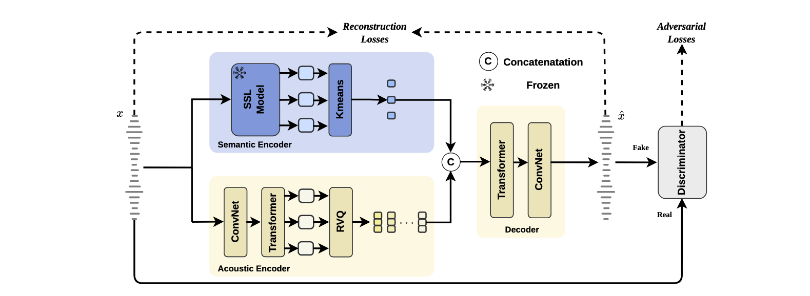
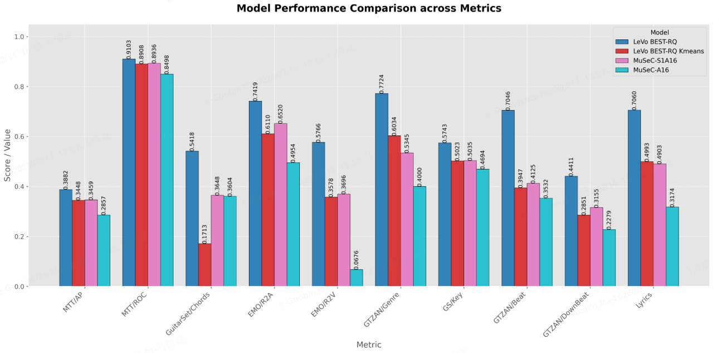

Anonymous Submission to Interspeech 2026
MuSeC is a reconstruction-oriented music semantic codec that disentangles semantic and acoustic content directly from mixed music, improving both reconstruction quality and LM-friendliness.

Overview of MuSeC. A frozen SSL encoder + k-means provides semantic tokens; an acoustic RVQ stream captures fine-grained acoustics. The two streams are concatenated and decoded for high-fidelity reconstruction.
Discrete audio tokenization has become the critical interface between raw waveforms and autoregressive modeling in recent music generation. As a result, music tokenizers must simultaneously support high-fidelity reconstruction and produce discrete sequences that remain amenable to language modeling. Existing reconstruction-oriented tokenizers often mix musical structure with fine acoustic details, producing high-entropy tokens that are hard to model. In contrast, semantics-guided alternatives are designed for speech and do not fit music well, often hurting reconstruction quality. We address these trade-offs by rethinking music tokenization around a measurable notion of music semantic content grounded in downstream Music Information Retrieval tasks. Guided by this definition, we propose MuSeC, a music semantic codec that disentangles semantic and acoustic content directly from mixed signals without source separation. MuSeC preserves information required for high-fidelity reconstruction while producing more LM-friendly discrete units. Empirically, it improves reconstruction quality and significantly reduces language-model perplexity, providing a practical foundation for high-fidelity LLM music generation.
Listening Demos
Side-by-side comparisons among Ground Truth, MuCodec-LeVo, XCodec-YuE, MuSeC-S1A8 1 semantic + 8 acoustic, and MuSeC-S1A16 1 semantic + 16 acoustic.
Copyright note. The short_* samples are 15-second reconstructions of real songs for research demonstration. The full_* samples are complete copyright-safe tracks generated with Suno and then reconstructed by different codecs.
Ablation Study
Full MuSeC versus ablated variants. MuSeC-S0A16 semantic branch kept, semantic tokens disabled and MuSeC-A16 semantic branch removed.
Results and Analysis
Summary across content preservation, LM friendliness, reconstruction quality, and the factorized behavior of semantic and acoustic metrics.
| Codec | Token Rate | Codebook Size | MTT AP ↑ | Chords AUC ↑ | Lyrics Acc ↑ | Lyrics Score ↑ | Top-1 ↑ | Top-5 ↑ | Top-10 ↑ | PPL ↓ | PESQ ↑ | STOI ↑ | Mel L1 ↓ |
|---|---|---|---|---|---|---|---|---|---|---|---|---|---|
| XCodec-YuE | 50 | 8×1024 | 0.347 | 0.884 | 0.348 | 0.352 | 0.498 | 0.783 | 0.882 | 6.884 | 1.642 | 0.617 | 1.905 |
| MuCodec-LeVo | 25 | 1×16385 | 0.294 | 0.865 | 0.264 | 0.387 | 0.391 | 0.577 | 0.662 | 1.575 | 1.167 | 0.375 | 1.419 |
| MuSeC-S1A8 | 25 | 1×2048 + 8×1024 | 0.344 | 0.892 | 0.298 | 0.425 | 0.628 | 0.889 | 0.932 | 1.613 | 1.714 | 0.621 | 0.984 |
| MuSeC-S1A16 | 25 | 1×2048 + 16×1024 | 0.346 | 0.894 | 0.365 | 0.490 | 0.651 | 0.905 | 0.955 | 1.694 | 2.201 | 0.683 | 0.883 |
Quantitative ablation of the semantic stream and acoustic codebooks. The table highlights the effect of removing semantic tokens or removing the semantic branch entirely, while the figure below visualizes how semantic-content and acoustic-content metrics respond differently.
| Codec | MTT AP ↑ | Chords AUC ↑ | Lyrics Acc ↑ | Lyrics Score ↑ | Top-1 ↑ | Top-5 ↑ | Top-10 ↑ | PPL ↓ | PESQ ↑ | STOI ↑ | Mel L1 ↓ |
|---|---|---|---|---|---|---|---|---|---|---|---|
| LeVo BEST-RQ | 0.345 | 0.891 | 0.171 | 0.499 | – | – | – | – | – | – | – |
| MuSeC-S1A16 | 0.346 | 0.894 | 0.365 | 0.490 | 0.651 | 0.905 | 0.955 | 1.694 | 2.201 | 0.683 | 0.883 |
| MuSeC-S0A16 | 0.292 | 0.854 | 0.358 | 0.443 | 0.532 | 0.807 | 0.882 | 5.771 | 1.540 | 0.616 | 1.178 |
| MuSeC-A16 | 0.286 | 0.850 | 0.360 | 0.317 | 0.582 | 0.811 | 0.902 | 6.543 | 2.246 | 0.689 | 0.831 |
This figure complements the ablation table by showing how the semantic-only representation and the added acoustic codebooks behave across different metric groups. The semantic metrics remain relatively stable after adding acoustic codebooks, while the acoustic metrics are recovered much more substantially.

Visualization of the ablation behavior. Compared with the original continuous LeVo BEST-RQ representation, the k-means quantized semantic representation alone loses substantial acoustic information, most clearly on Chords. Once acoustic codebooks are introduced, this missing acoustic content is largely recovered, while semantic-content metrics such as MTT, EMO, and Genre change only slightly. Key and Beat also improve, though less dramatically than Chords, suggesting that MuSeC's two-stream design separates distinct semantic and acoustic factors effectively.
Music semantic content MTT, EMO, and Genre stay comparatively stable when acoustic codebooks are added, indicating that the semantic branch already captures the task-relevant high-level musical content.
Music acoustic content Chords, Key, Beat, and DownBeat benefit much more from introducing acoustic codebooks, showing that the quantized semantic representation alone does not preserve enough low-level acoustic detail.
Most representative case Chord performance is the clearest example: it drops strongly in the semantic-only setting and is substantially recovered after adding acoustic codebooks, supporting our definition of chord-related accompaniment structure as strongly tied to music acoustic content.
@inproceedings{musec2026,
title = {Rethinking Music Tokenization: A Semantic Codec for High-Fidelity LLM Music Generation},
author = {Anonymous Authors},
booktitle = {Interspeech},
year = {2026}
}